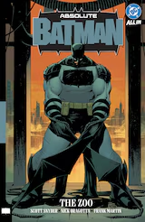
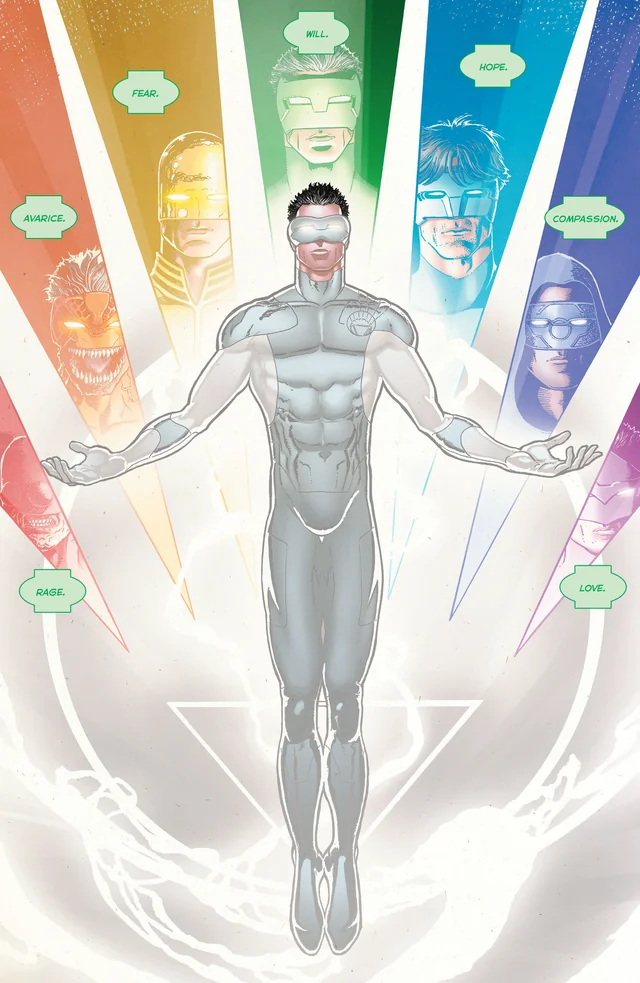
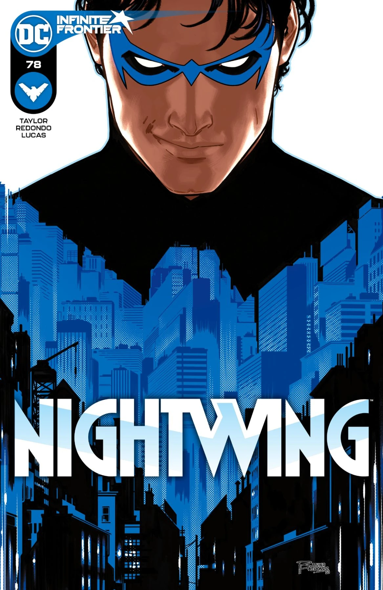

First and foremost I want to emphasize that the best way to enjoy comics is to find and choose a character that you are interested in or an author that writes great stories. These recommendations are a mix of really popular series and my favorite superheroes. Like my favorite superhero of all time is Batman so I have a lot of Batman centric stories I would like to share and others. I will be recommending different heroes for the sake of variety.
Absolute Batman
 Absolute Batman is part of a DC Universe reset where Darkseid recreates the every superheros origin and world. We essentially are stripping core aspects of every major superhero but leaving them with their morals. Everyone always talks about how Batman's Superpower is being a billionaire well this story tackles, what if Batman wasn't rich. How does Batman tackle his issues without his super advanced tech. How does Batman tackle his villians without the years of Tibetan Monk Training. What differences are his villians now. The series stars a 24-year-old blue-collar civil engineer named Bruce Wayne, who operates at night to fight crime as the vigilante Batman with his own self-designed equipment and armor. The solution what if we made Batman absolutely jacked and made him the ultimate civil servant where he has worked in every single blue collar section of Gotham that he knows Gotham from the back of his hand. This story is an absolute blast to read and the flips on every villian is so jaw-dropping. Once you see an image of absolute Mr.Freeze looking like Slenderman had sex with a blue man you won't be able to put down the story. Currently has 12 single issues out right now with a single Volume covering issues #1-6. This story is written by Scott Snyder.
Blackest Night
 "Blackest Night" is a 2009 American comic book crossover storyline published by DC Comics, consisting of an eponymous central miniseries, written by Geoff Johns and penciled by Ivan Reis, along with a number of tie-in issues of various DC monthly books, including Green Lantern and Green Lantern Corps."Blackest Night" involves Nekron, a personified force of death who reanimates deceased superheroes and seeks to eliminate all life and emotion from the universe. Johns identified the series' central theme as emotion. Other tie-ins released included an audio drama from Darker Projects. Blackest Night is THE green lantern book centered around my favorite green lantern Kyle Reyner. Blackest Night is a pivotal book in green lantern history that establishes so much of the world and allows you to understand every single lantern in the emotional spectrum. Not only is it an amazing green lantern book this is a crossover storyline so we get to see many of our favorite heroes get brought in as different lanterns or as the main driving force of the story life vs death. The white lanterns vs the black lanterns.
Nightwing by Tom Taylor #78-#118
 Nightwing by Tom Taylor takes on Bludhaven's most famous vigilante, Nightwing! After coming into billions of dollars, Dick Grayson has a plan to save his city that doesn't involve punching bad guys...well, that doesn't involve ONLY punching bad guys. Nightwing also known as Dick Grayson formerly the boy wonder Robin is the first protege under Batman's wing. In this story, Alfred Pennyworth bestowed upon Dick an immense fortune essentially turning him into a mini Batman money wise. This story tackles essential story beats such as greif, expetation, and improvement. Nightwing is the ideal superhero, he is Batman if Batman knew how to tackle his trauma in a constructive way. Tom Taylor really allows Nightwing to come into his own as a character while also freeing him from the shackles that is being in Batman's shadow.
Amazing Spiderman
 Spider-Man is a superhero in American comic books published by
Marvel Comics. Created by writer-editor
Stan Lee
and artist Steve Ditko, he first appeared in the anthology comic
book Amazing Fantasy #15 (August 1962) in the Silver Age of Comic
Books. Considered one of the most popular and commercially
successful superheroes, he has been featured in comic books,
television shows, films, video games, novels, and plays. Spider-Man
has the secret identity of Peter Benjamin Parker who was raised by
his Aunt May and Uncle Ben in Queens, New York City after the death
of his parents. Lee, Ditko, and later writers had the character deal
with the struggles of adolescence and young adulthood. His
"self-obsessions with rejection, inadequacy, and loneliness" were
issues with which young readers could identify. Unlike previous teen
heroes, Spider-Man was not a sidekick nor did he have a mentor. He
would be given many supporting characters, such as his Daily Bugle
boss J. Jonah Jameson; friends like Harry Osborn and Flash Thompson;
romantic interests like Gwen Stacy, Mary Jane Watson, and the Black
Cat; and enemies such as Doctor Octopus, the Green Goblin, and
Venom. close.
Spider-Man is a superhero in American comic books published by
Marvel Comics. Created by writer-editor
Stan Lee
and artist Steve Ditko, he first appeared in the anthology comic
book Amazing Fantasy #15 (August 1962) in the Silver Age of Comic
Books. Considered one of the most popular and commercially
successful superheroes, he has been featured in comic books,
television shows, films, video games, novels, and plays. Spider-Man
has the secret identity of Peter Benjamin Parker who was raised by
his Aunt May and Uncle Ben in Queens, New York City after the death
of his parents. Lee, Ditko, and later writers had the character deal
with the struggles of adolescence and young adulthood. His
"self-obsessions with rejection, inadequacy, and loneliness" were
issues with which young readers could identify. Unlike previous teen
heroes, Spider-Man was not a sidekick nor did he have a mentor. He
would be given many supporting characters, such as his Daily Bugle
boss J. Jonah Jameson; friends like Harry Osborn and Flash Thompson;
romantic interests like Gwen Stacy, Mary Jane Watson, and the Black
Cat; and enemies such as Doctor Octopus, the Green Goblin, and
Venom. close.